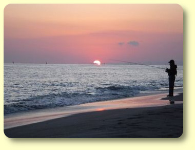

豊橋市、大平洋表浜での釣り風景
新着情報・お知らせ
皆様、１年で最も寒い時期となり、朝晩冷え込むようになりました。いかがお過ごしでしょうか。Fish & Tips の伊藤です。渓流釣りシーズンも、開幕にはまだ間があり、私は寒中のコイ釣りにいそしんでおります。
作者の相変わらずの役に立たない駄文ばかりですが、どうぞごゆっくりご覧下さい。
愛読者様 プレゼントのお知らせ！
「New Zealand's Top Trout Fishing Waters」
John Kent, Patti Magnano Madsen 共著
奮ってご応募下さい！ こちらのリンクからどうぞ！
ここから下が、今回の新着記事です。
ティップス から
釣行日誌 故郷編 から
私のお気に入り から
ワークマンプラス ５本指 FieldCore Trekking socks
コラム から
飛行日誌 から
ここから下は、2023/10/05 の更新内容です。
私のお気に入り から
フライロッド Cortland Competition Nymph Fly Rod 10ft6in #3, 4pcs
飛行日誌 から
ここから下は、2021/10/20 の更新内容です。
釣行日誌 故郷編 から
2021/09/04 「魚は少ないけれど、釣り人も少ない」川へ行きたい
コラム から
私のお気に入り から
テンカラ用テーパーライン・フライフィッシングの小物用ウォレット
ここから下は、2020/09/01 の更新内容です。
釣行日誌 故郷編 から
ティップス から
ロールキャスト：あまり語られることが無いが、
実に有益なキャスト
私のお気に入り から
オーナー社 ヘラ丸カン B-SS（ティペットリングの代用品）
ここから下は、2020/03/01 の更新内容です。
釣行日誌 故郷編 から
ティップス から
コラム から
THE LURE OF FISHING calendar 2011 の名言の数々
エッセイ から
リンク集 から
Huge Flyfisherman アメリカのフライフィッシングタックルショップ
Panther Martin アメリカの老舗ルアーメーカー、パンサー・マーティン社
The Essence of Fly Fishing 名フライフィッシャーマン、インストラクターのメル・クリーガー氏のウェブサイト
Postcards New Zealand ニュージーランドの絵葉書専門店
ここから下は、2020/10/01 の更新内容です。
釣行日誌 故郷編 から
1984/08/19～24 徳山村へバックパッキングでのテンカラ釣り
私のお気に入り から
ティップス から
ここから下は、2020/08/01 の更新内容です。
釣行日誌 NZ編 から
NZ 2019-20釣行 Vol - 3 He-Day 様 特別寄稿
釣行日誌 故郷編 から
2020/04/11 春が来た
2020/06/27 流芯から珍しいお客さん
私のお気に入り から
コラム から
レポート「太田切川フィッシングフェスタ '98」その２ （再録）
写真集 から
リンク集 から
Jensen Fly Fishing ( YouTube Channel )
ここから下は、2020/07/01 の更新内容です。
釣行日誌 NZ編 から
NZ 2019-20釣行 Vol - 2 He-Day 様 特別寄稿
私のお気に入り から
ティップス から
ここから下は、2019/04/01 の更新内容です。
釣行日誌 NZ編 から
NZ 2019-20釣行 Vol - 1 前編 He-Day 様 特別寄稿
ティップス から
タスコ社製 モノキュラー ２代目 ESSENTIAL 10×25
釣行日誌 故郷編 から
2019/07/14 梅雨の最中、高原の里川にて
2019/07/21 ニンフの愉しみ
2019/07/28 掌で踊る宝石
2019/08/11 久しぶりのスピナー
エッセイ から
コラム から
私のお気に入り から
本棚から
Collins Cobuild コウビルド英英辞典【改訂第４版 CD-DOM付】
巨大鱒に魅入られてニュージーランド暮らし （日本人フィッシングガイドの快楽と憂鬱）
Spot X Freshwater NZ NZの淡水釣りの釣り場ガイド
Flyfishing New Zealand North Island/South Island/Lakes/etc ニュージーランドのフライフィッシング、釣り場と釣り方ガイドブック
ここから下は、2019/08/19 の更新内容です。
釣行日誌 ＮＺ編 から
釣行日誌 故郷編 から
ここから下は、2019/06/27 の更新内容です。
釣行日誌 ＮＺ編 から
釣行日誌 故郷編 から
コラム から